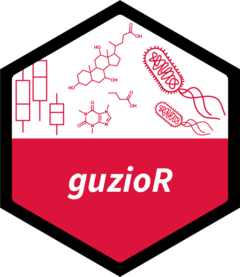

Create a Boxplot with Points
quick_boxplot.RdGenerate a boxplot with points. Data must be structured to have x, y, and grouping variables in separate columns.
Usage
quick_boxplot(
data,
x.var,
y.var,
group.var = NULL,
facet.var = NULL,
post.hoc = "dunn_test",
ns.comp = TRUE,
adj.method = "BH",
x.lab = deparse(substitute(x.var)),
y.lab = deparse(substitute(y.var)),
color.lab = deparse(substitute(group.var))
)Arguments
- data
Data frame or table to be used in plotting.
- x.var
Variable to be used on the x axis.
- y.var
Continuous variable used for y axis.
- group.var
Variable used for grouping and color. Default is none.
- facet.var
Variable used for creating facets that will then be plotted together. Does not need to be included if there isn't one.
- post.hoc
Statistical test used for determining significance between groups. Default is Dunn's test. Allowable methods are those from the rstatix R package: "wilcox_test", "t_test", "sign_test", "dunn_test", "emmeans_test", "tukey_hsd", "games_howell_test".
- ns.comp
TRUE if only significant comparisons should be shown, FALSE if all comparisons should be shown. If adj.method is set to "none", only significant unadjusted p.values will be shown.
- adj.method
Method used for p value adjustment across all p.values present in a plot. Default is Benjamini-Hochburg. Allowable methods are those from 'p.adjust'.
- x.lab
X axis label.
- y.lab
Y axis label
- color.lab
Color label.